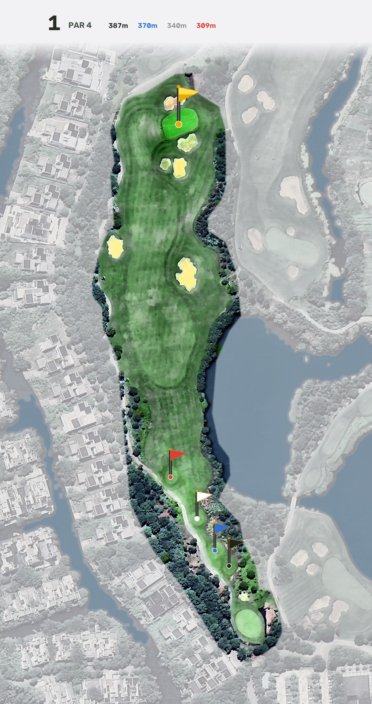
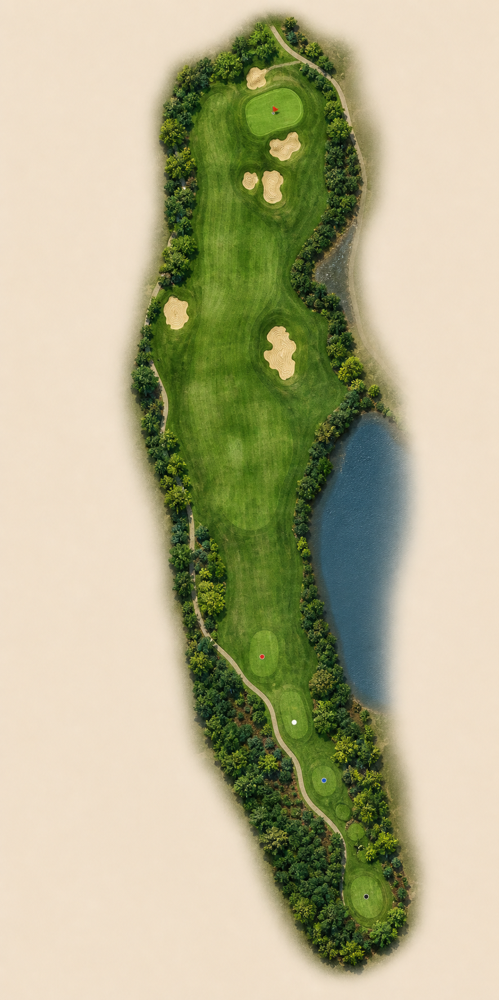

TAIZHOU YUNHAI · HD HOLEMAP
真实范围 × 高清材质
专业路线图决定球洞范围，卫星影像决定真实要素，模型只生成草地、树冠和沙坑材质。
几何锁定
第 1 洞 · 高清材质样板


该洞尚未进入材质合成
先看卫星增强基线；第 1 洞审校通过后再批量生成。
TAIZHOU YUNHAI · HD HOLEMAP
专业路线图决定球洞范围，卫星影像决定真实要素，模型只生成草地、树冠和沙坑材质。

